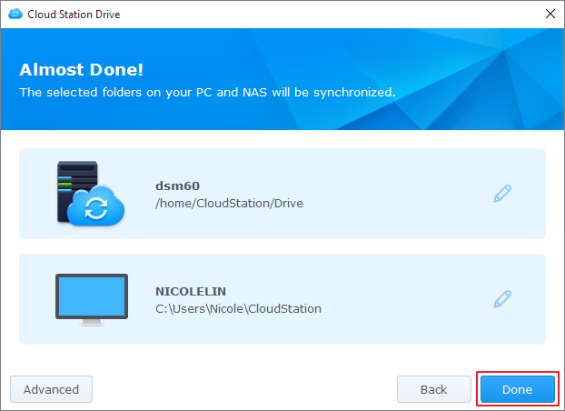

概要
Synology NAS 用の Cloud Station は、Synology NAS 上のファイルをコンピュータやモバイルデバイス（DS cloud がインストールされていること）などの別のデバイスと同期するためのファイル同期アプリケーションです。Synology NAS に Cloud Station Server、コンピュータに Cloud Station Drive をインストールして、コンピュータに保管されているファイルを自動的に Synology NAS に同期できるようにします。
Synology NAS とコンピュータを接続する
- [パッケージセンター] を選択し、[Cloud Station Server] を探したら、[インストール] をクリックします。
- Cloud Station Server を起動します。
- [概要] タブで Cloud Station Drive のボタンをクリックして、あなたのオペレーティング システムに Cloud Station Drive をダウンロードします。(Synology Download Center から Cloud Station をダウンロードすることができます)。
- コンピュータでインストーラを起動し、画面の指示に従ってください。
- インストール後は、コンピュータで Cloud Station を実行します。[今すぐスタート] をクリックします。
- Cloud Station を起動している Synology NAS のアドレス（または QuickConnect ID）、ユーザー名、パスワードを入力します右側にある検索アイコンをクリックして、LAN 内の IP を検索します。[次へ] をクリックします。
- [編集] アイコンをクリックして、Synology NAS とコンピュータで同期したいフォルダを選択します。次に、[詳細設定] をクリックして、同期設定を行います。
- 同期しないフォルダのチェックマークを外します。
- 最大ファイルサイズや同期しないブラックリストのファイル名、ファイルタイプを設定します。
- 双方向に同期するのか、Synology NAS からデータをダウンロードするだけなのかを選択します。
- [完了] をクリックすると、セットアップが完了します。 
- システム トレイに Cloud Station アイコンがあります。
- システムトレイ アイコンをクリックすると、トレイメニューが開きます。ここでは、ファイルの処理状況と状態が表示されます。ここでは、ファイルの処理状況と状態が表示されます。[メイン アプリ] をクリックすると、Cloud Station が起動します。
- Cloud Station が起動すると、その使い方のヒントが表示されます。右矢印をクリックするとその他のヒントが表示されます。または、[オンライン チュートリアル] をクリックすると、その他の情報が表示されます。ヒントが必要ない場合は、[今後これを表示しない] にチェックマークを付けます。
- 以上で、Cloud Station Drive で同期タスクを管理できるようになりました。


以前のバージョンの同期ファイルをダウンロードする：
- システムトレイで [Cloud Station Drive] アイコンをクリックし、フォルダ アイコンをクリックします。
- ファイルを右クリックして、[Synology Cloud Station] > [以前のバージョンを参照] を選択します。
- ダウンロードしたいバージョンを探し、ダウンロード アイコンをクリックします。


同期したファイルの前のバージョンを Cloud Station からダウンロードまたは復元する
- [Cloud Station Server] > [バージョン履歴] を選択し、復元したいファイルやフォルダを探します。
- 取得するファイルを選択し、［操作］ > [以前のバージョンを参照] をクリックします。
- ダウンロードしたいファイルのバージョンを選択し、[ダウンロード] をクリックします。または、選択したバージョンを復元したい場合は、[復元] をクリックすると、現在のバージョンに上書きされます。


重要な注意
- 誤ってファイルを削除したり、上書きしたりしたときのために、バージョン履歴は常に維持してください。
- [グローバル設定] で、コンピュータでファイルを削除したときに、NAS から取り戻すか、または NAS で削除するかを設定することができます。
データをモバイル デバイスと同期する
DS cloud は、Apple App Store や Google Play Store から無償でダウンロードできます。以下の QR コードをスキャンすると、簡単にダウンロードできます。